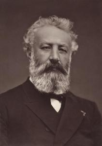
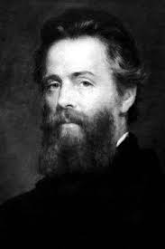
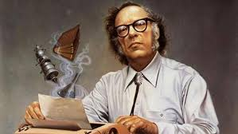
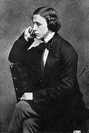
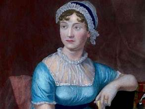
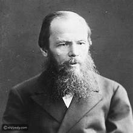
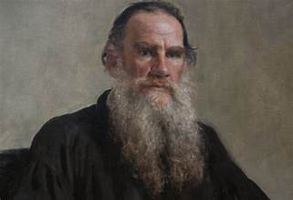
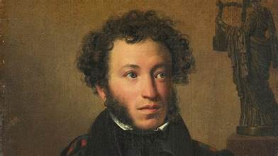

Here are the two most famous writers in history
William Shakespeare
William Shakespeare ( 23 April 1564 – 23 April 1616) an English playwright, poet and actor. He is widely regarded as the greatest writer in the English language and the world's pre-eminent dramatist. He is often called England's national poet and the "Bard of Avon" or simply "the Bard". His extant works, including collaborations, consist of some 39 plays, 154 sonnets, three long narrative poems and a few other verses,some of uncertain authorship His plays have been translated into every major living language and are performed more often than those of any other playwright. Shakespeare remains arguably the most influential writer in the English language, and his works continue to be studied and reinterpreted.
Jules Verne
Jules Gabriel Verne (/vɜːrn/ VURN,[1][2] French: [ʒyl ɡabʁijɛl vɛʁn]; 8 February 1828 – 24 March 1905)[3] was a French novelist, poet, and playwright. His collaboration with the publisher Pierre-Jules Hetzel led to the creation of the Voyages extraordinaires,[3] a series of bestselling adventure novels including Journey to the Center of the Earth (1864), Twenty Thousand Leagues Under the Seas (1870), and Around the World in Eighty Days (1872). His novels are generally set in the second half of the 19th century, taking into account contemporary scientific knowledge and the technological advances of the time.
Ernest Hemingway
Ernest Miller Hemingway (/ˈhɛmɪŋweɪ/ HEM-ing-way; July 21, 1899 – July 2, 1961) was an American novelist, short-story writer, and journalist. Known for an economical, understated style that influenced later 20th-century writers, he has been romanticized for his adventurous lifestyle and outspoken, blunt public image. Some of his seven novels, six short-story collections and two non-fiction works have become classics of American literature, and he was awarded the 1954 Nobel Prize in Literature.
Agatha Christie
Agatha Christie (née Miller; 15 September 1890 – 12 February 1976) was an English writer known for her work in the crime fiction genre. She is the best-selling author of all time, with her novels having sold more than a billion copies worldwide. Christie's writing style was characterized by intricate plots, memorable characters, and unexpected twists. Her most famous detective is Hercule Poirot, and she also created the character Miss Marple.
Isaac Asimov
Isaac Asimov (/ˈaɪzək ˈæzɪmoʊ/ EYE-zək AZ-ih-moh;[1] born Isaak Yudovich Ozimov; 2 January 1920 – 6 April 1992) was an American writer and professor of biochemistry at Boston University. He was known for his works of science fiction and popular science. Asimov was a prolific author, writing or editing more than 500 books and an estimated 90,000 letters and postcards. His most famous works include the "Foundation" series, the "Robot" series, and the "Galactic Empire" series.
Lewis Carroll
Lewis Carroll ( 27 January 1832 – 14 January 1898 ) was the pen name of the English writer, mathematician , and photographer Charles Lutwidge Dodgson . The author's two most famous works are Alice's Adventures in Wonderland (1865) and its sequel, Through the Looking-Glass (1871). These books are widely read around the world. The first book, commonly called Alice's Adventures in Wonderland, has been translated into more than 30 languages, including Arabic and Chinese. It has also been made available in Braille so that blind people can read and enjoy it.
Jane Austen
Jane Austen ( 16 December 1775 – 18 July 1817 ) was an English novelist known primarily for her six major novels, which interpret, critique and comment upon the British landed gentry at the end of the 18th century. Austen's plots often explore the dependence of women on marriage in the pursuit of favorable social standing and economic security. Her works critique the novels of sensibility of the second half of the 18th century and are part of the transition to 19th-century literary realism. Her use of biting irony, along with her realism, humor, and social commentary have earned her acclaim among critics and scholars.
Fyodor Dostoevsky
Fyodor Mikhailovich Dostoevsky ( 11 November 1821 – 9 February 1881 ) was a Russian novelist, short story writer, essayist, journalist and philosopher. Dostoevsky's literary works explore human psychology in the troubled political, social, and spiritual atmospheres of 19th-century Russia. His most acclaimed works include Crime and Punishment (1866), The Idiot (1869), Demons (1872), and The Brothers Karamazov (1880).
Leo Tolstoy
Leo Tolstoy ( 9 September 1828 – 20 November 1910 ) was a Russian writer who is regarded as one of the greatest authors of all time. He is best known for his novels War and Peace (1869) and Anna Karenina (1877), which are often cited as pinnacles of realist fiction. Tolstoy's works explore themes of morality, spirituality, and the human condition, and he is also known for his philosophical writings on nonviolent resistance and social justice.
Alexander Pushkin
Alexander Sergeyevich Pushkin ( 6 June 1799 – 10 February 1837 ) was a Russian poet, playwright, and novelist of the Romantic era. He is considered by many to be the greatest Russian poet and the founder of modern Russian literature. Pushkin's works include the novel in verse "Eugene Onegin," the play "Boris Godunov," and numerous poems and short stories. His writing style is characterized by its lyrical beauty, wit, and deep exploration of human emotions and social issues.









